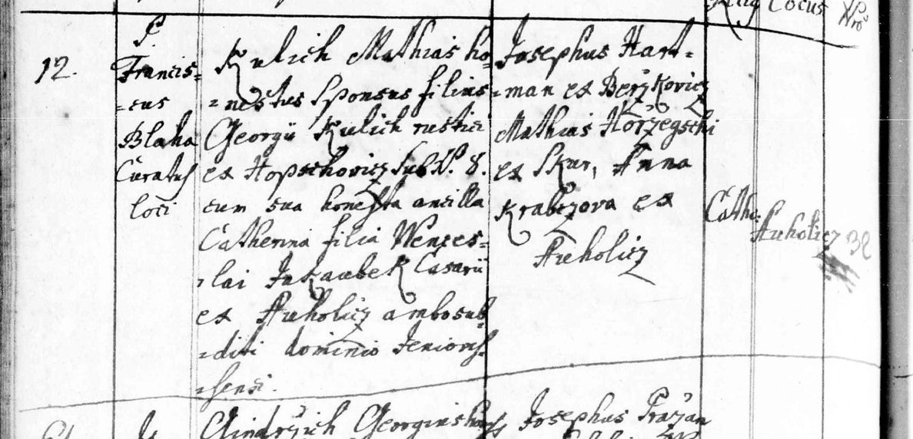

Text z matriky a překlad
Přepis originálu
Fara Vepřek, oddáni 12. 1. 1773 (latinsky), oddával P. František Blaha, farář, místo Ouholice: Matěj Kulich, poctivý (svobodný) ženich, syn Jiřího Kulicha, sedláka (rusticus) z Hobšovic čp. 8 × poctivá panna Kateřina, dcera Václava Jakoubka, chalupníka z Ouholic; oba poddaní panství „Jeniovessense“ (nejspíš Nelahozeves). Svědkové Josef Hartman z Brzkovic (?), Matěj Hořejší ze Skur (?) a Anna Krabcová z Ouholic. Matěj tedy přišel do Ouholic z Hobšovic u Slaného – ze stejné vsi jako Václav Kulich (* asi 1782), pradědeček legionáře Antonína Kulicha z Dolína.
Překlad
Fara Vepřek, oddáni 12. 1. 1773 (latinsky), oddával P. František Blaha, farář, místo Ouholice: Matěj Kulich, poctivý (svobodný) ženich, syn Jiřího Kulicha, sedláka (rusticus) z Hobšovic čp. 8 × poctivá panna Kateřina, dcera Václava Jakoubka, chalupníka z Ouholic; oba poddaní panství „Jeniovessense“ (nejspíš Nelahozeves). Svědkové Josef Hartman z Brzkovic (?), Matěj Hořejší ze Skur (?) a Anna Krabcová z Ouholic. Matěj tedy přišel do Ouholic z Hobšovic u Slaného – ze stejné vsi jako Václav Kulich (* asi 1782), pradědeček legionáře Antonína Kulicha z Dolína.